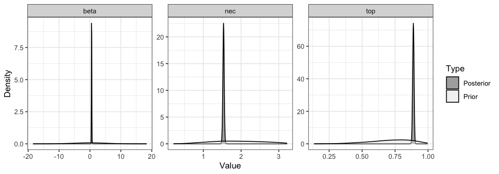

The main focus here is to explain the default priors used in bayesnec and to showcase how the user can interrogate the priors used in a bayesec model and alternatively specify their own priors, should they wish to. This might be needed depending on the model and the data because bayesnec tries to find reasonable and yet only weakly informative priors for the model parameters by default. First we describe the default priors used in bayesnec and then follow up with a demonstration of how the user can specify priors in multiple ways for objects of class bayesnecfit and bayesmanecfit.
bayesnec
The default priors used in bayesnec can generally be considered “weakly informative”. They are constructed for each parameter of each model being fitted based on the characteristics of either the input response and predictor data, depending on which is relevant to the specific parameter scaling. In the case of parameters that scale with the response, priors are constructed based on the relevant link scaling, whether that be identity or the default (or user specific) link function for a specific distribution. The priors are constructed by bnec internally based on the chosen model, the distribution (including the relevant link function), the predictor and the response.
Only the parameters top and bot scale specifically with the response. For Gaussian-distributed response data (or any response data for which the link ensures valid values of the response can take from +Inf to -Inf, including log and logit) priors are normal with a standard deviation of 2.5 and a mean set at the 90th and 10th quantiles for top and bot respectively. For Poisson-, Negative Binomial- and Gamma-distributed data the response is bounded by 0 and thus priors are Gamma, with a mean scaled to correspond to the 75th and 25th quantiles for top and bot respectively. The mean is linked mathematically to the shape (s) and rate parameters (r) by the equation \(mean = s \times (1/r)\) with the Gamma shape parameter set at 2. For the Binomial, Beta, and Beta Binomial families estimates for top and bot must necessarily be constrained between 0 and 1 when modelled on the "identity" link (the default in bayesnec). Because of this constraint there is no need to adjust scaling based on the response. bayesnec uses beta(5, 1) and beta(1, 5) priors to provide a broad density centred across the upper and lower 0 to 1 range for the top and bot parameters, respectively.
The parameters nec and ec50 scale with respect to the predictor because both of these are parameters in concentration-response curves the are estimated in units of concentration. To stabilise model fitting the nec and ec50 parameters are bounded to the upper and lower observed range in the predictor, under the assumption that the range of concentrations in the experiment were sufficient to cover the full range of the response outcomes. The priors used reflect the characteristics of the observed data that are used to guess the appropriate distribution. If the predictor data are bounded to 0 and >1, a Gamma prior is used, with maximum density (mean, see above) at the median value of the predictor, and a shape parameter of 5. If the predictor data are bounded to 0 and 1 a beta(2, 2) prior is used. For predictor data ranging from +Inf to -Inf a normal prior is used, with a mean set at the median of the predictor values and a standard deviation of 2.5.
For the parameters beta, slope, d and f, we first ensured any relevant transformations in the model formula such that theoretical values of -Inf to +Inf are allowable, and a normal(0, 1) prior is used. For example, in the nec3param model, beta is an exponential decay parameter which must by definition be bounded to 0 and +Inf. Calling exp(beta) in the model formula ensures the exponent meets these requirements. Note also that a mean of 0 and standard deviation of 1 represents a relatively broad prior on the exponential scaling. See the Model details vignette or ?model("all") for more information on all the models available in bayesnec and their specific formulation.
There may be situations were the default bayesnec priors to not behave as desired, or the user wants to provide informative priors. For example the default priors may be too informative, yielding unreasonably tight confidence bands, although this is only likely where there are few data. Conversely, priors may be too vague, leading to poor model convergence. Alternatively, as indicated in the example below, the default priors may be of the wrong statistical distribution if there was insufficient information in the provided data for bayesnec to guess correctly the appropriate ones to use.
The priors used in the default model fit can be extracted using pull_prior, and a sample or plot of prior values can be obtained from the individual brms model fits through the function sample_priors which samples directly from the prior element in the brm model fit. We can also use the function check_prior (based on the hypothesis function of brms) to assess how the posterior probability density for each parameter differs from that of the prior.
To set specified priors, it is simplest to start by letting bnec find the priors on its own, i.e. by not specifying the brm argument prior at all.
library(brms)
library(bayesnec)
data(nec_data)
# a single model
exmp_a <- bnec(y ~ crf(x, model = "nec3param"), data = nec_data,
family = Beta(link = "identity"),
iter = 1e4, control = list(adapt_delta = 0.99))
class(exmp_a)
#> [1] "bayesnecfit" "bnecfit"We can view the prior and posterior probability densities of all the parameters in the model using the function check_prior, based on the hypothesis function of brms. This can be useful to assess if priors are suitably vague, and/or if they might be having an undesirable influence on the posterior.
check_priors(exmp_a)
In this case the priors seem reasonably vague, however there will be times when it is necessary to modify these priors. The user can take advantage of the function pull_prior to inspect what bnec came up with on its own, and decide how best to modify those priors to be more desirable.
pull_prior(exmp_a)
#> [[1]]
#> prior class coef group resp dpar nlpar bound source
#> normal(0, 2) b beta user
#> normal(0, 2) b Intercept beta (vectorized)
#> gamma(5, 2.28313180499098) b nec <lower=0.03234801324009,upper=3.22051966293556> user
#> gamma(5, 2.28313180499098) b Intercept nec (vectorized)
#> beta(5, 1) b top <lower=0,upper=1> user
#> beta(5, 1) b Intercept top (vectorized)
#> gamma(0.01, 0.01) phi defaultbnec chose a gamma prior on the NEC parameter of nec3param because the predictor nec_data$x is non-zero positive. However, imagine that in theory the predictor could have had negative values, it just happened to not have in this particular dataset. So let’s go ahead and specify something else, say a normal with larger variance.
my_prior <- c(prior_string("beta(5, 1)", nlpar = "top"),
prior_string("normal(1.3, 2.7)", nlpar = "nec"),
prior_string("gamma(0.5, 2)", nlpar = "beta"))
exmp_b <- bnec(y ~ crf(x, model = "nec3param"), data = nec_data,
family = Beta(link = "identity"), prior = my_prior,
iter = 1e4, control = list(adapt_delta = 0.99))Two things are of note. If the user is specifying their own priors, bnec requires them to specify priors for all parameters. The pull_prior function shows the priors after the model was fitted, but suppose the user does not know what parameters were comprised in a particular model. In those instances, the user can call the function show_params(model = "all") to inspect the parameters of each function, or some targeted function in particular.
show_params(model = "nec3param")
#> [[1]]
#> y ~ top * exp(-exp(beta) * (x - nec) * step(x - nec))
#> top ~ 1
#> beta ~ 1
#> nec ~ 1The user can also specify a named list of priors when one or more models are being fitted to the same dataset.
my_priors <- list(nec3param = c(prior_string("beta(5, 1)", nlpar = "top"),
prior_string("normal(1.3, 2.7)", nlpar = "nec"),
prior_string("gamma(0.5, 2)", nlpar = "beta")),
nec4param = c(prior_string("beta(5, 1)", nlpar = "top"),
prior_string("normal(1.3, 2.7)", nlpar = "nec"),
prior_string("gamma(0.5, 2)", nlpar = "beta"),
prior_string("beta(1, 5)", nlpar = "bot")))
exmp_c <- bnec(y ~ crf(x, model = c("nec3param", "nec4param")), data = nec_data,
family = Beta(link = "identity"), prior = my_priors,
iter = 1e4, control = list(adapt_delta = 0.99))pull_prior also works for an object of class bayesmanecfit, as does check_priors which allows an option of passing a filename to save the prior and posterior probability density plots to a pdf.
pull_prior(exmp_c)
check_priors(exmp_c, filename = "Check_priors")#> $nec3param
#> prior class coef group resp dpar nlpar bound source
#> gamma(0.5, 2) b beta user
#> gamma(0.5, 2) b Intercept beta (vectorized)
#> normal(1.3, 2.7) b nec user
#> normal(1.3, 2.7) b Intercept nec (vectorized)
#> beta(5, 1) b top user
#> beta(5, 1) b Intercept top (vectorized)
#> gamma(0.01, 0.01) phi default
#>
#> $nec4param
#> prior class coef group resp dpar nlpar bound source
#> gamma(0.5, 2) b beta user
#> gamma(0.5, 2) b Intercept beta (vectorized)
#> beta(1, 5) b bot user
#> beta(1, 5) b Intercept bot (vectorized)
#> normal(1.3, 2.7) b nec user
#> normal(1.3, 2.7) b Intercept nec (vectorized)
#> beta(5, 1) b top user
#> beta(5, 1) b Intercept top (vectorized)
#> gamma(0.01, 0.01) phi defaultThe user can also specify priors for one model only out of the entire set, bayesnec will return a message stating that it is searching for priors on its own when they are either ill-formed (e.g. incomplete or have a typo), or the user simply decided not to specify priors for a particular model, e.g.
my_priors <- list(nec3param = c(prior_string("beta(5, 1)", nlpar = "top"),
prior_string("normal(1.3, 2.7)", nlpar = "nec"),
prior_string("gamma(0.5, 2)", nlpar = "beta")),
nec4param = c(prior_string("beta(5, 1)", nlpar = "top"),
prior_string("normal(1.3, 2.7)", nlpar = "nec"),
prior_string("gamma(0.5, 2)", nlpar = "beta"),
prior_string("beta(1, 5)", nlpar = "bot")))
exmp_d <- bnec(y ~ crf(x, model = c("nec3param", "nec4param")), data = nec_data,
family = Beta(link = "identity"), prior = my_priors[1],
iter = 1e4, control = list(adapt_delta = 0.99))prior = my_priors[[1]] would also have worked because the argument priors can either take a brmsprior object directly, or a named list containing model-specific brmsprior objects.
Finally the user can also extend an existing bayesmanecfit object with the function amend, also by specifying custom-built priors.
necsigm_priors <- c(prior_string("beta(5, 1)", nlpar = "top"),
prior_string("gamma(2, 6.5)", nlpar = "beta"),
prior_string("normal(1.3, 2.7)", nlpar = "nec"),
prior_string("normal(0, 2)", nlpar = "d"))
exmp_e <- amend(exmp_d, add = "necsigm", priors = necsigm_priors)